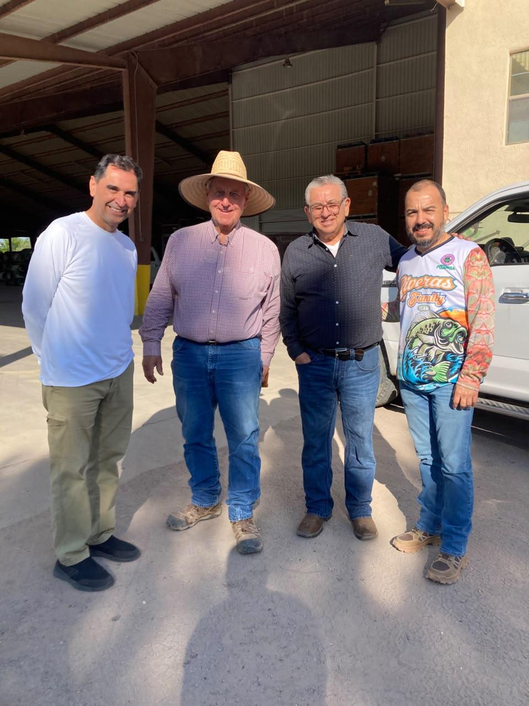
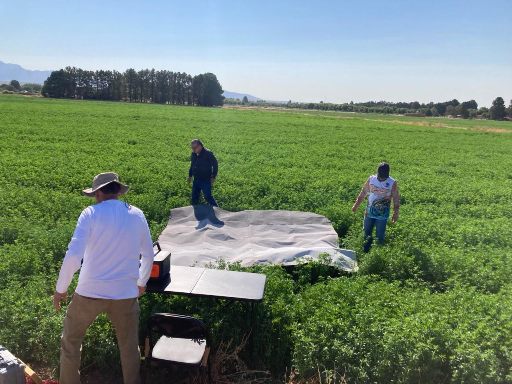
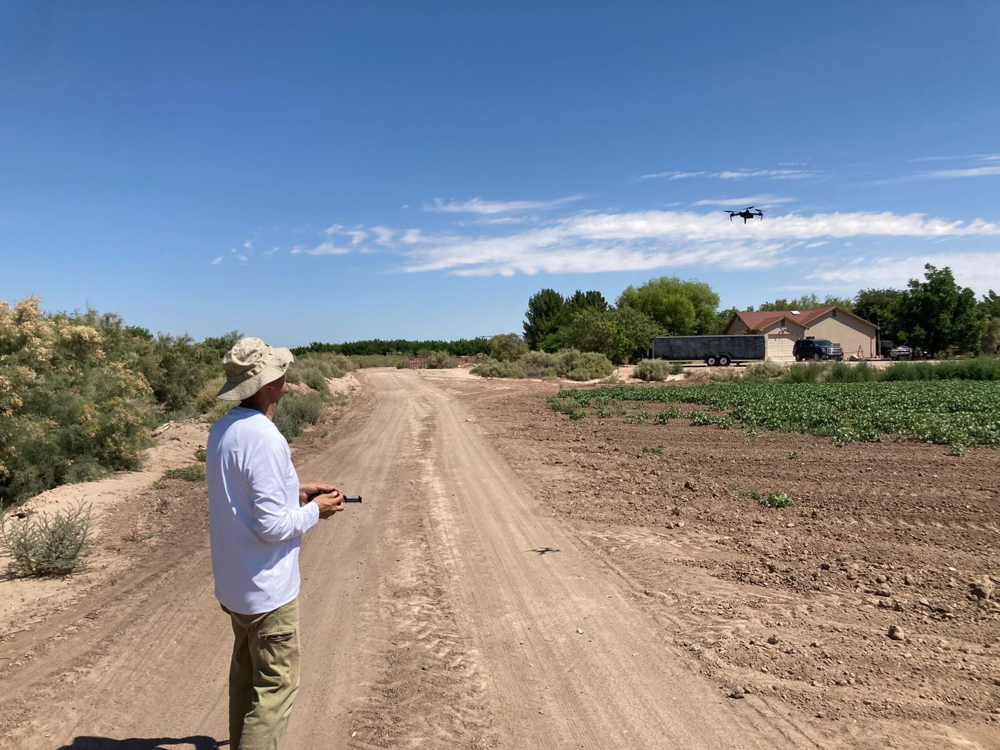
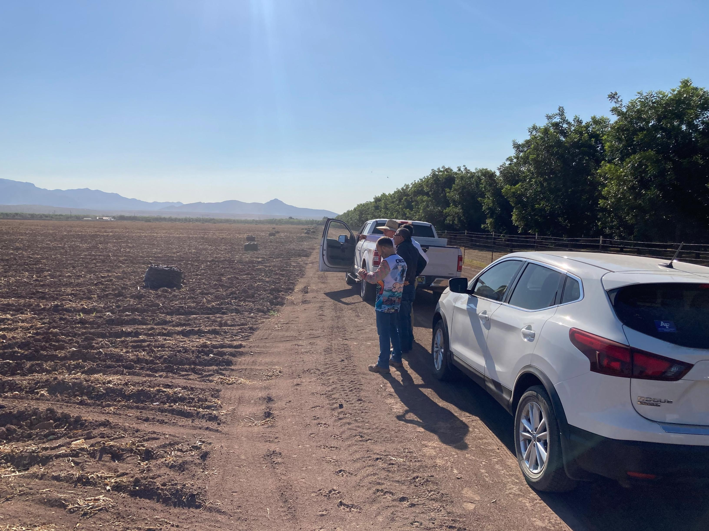
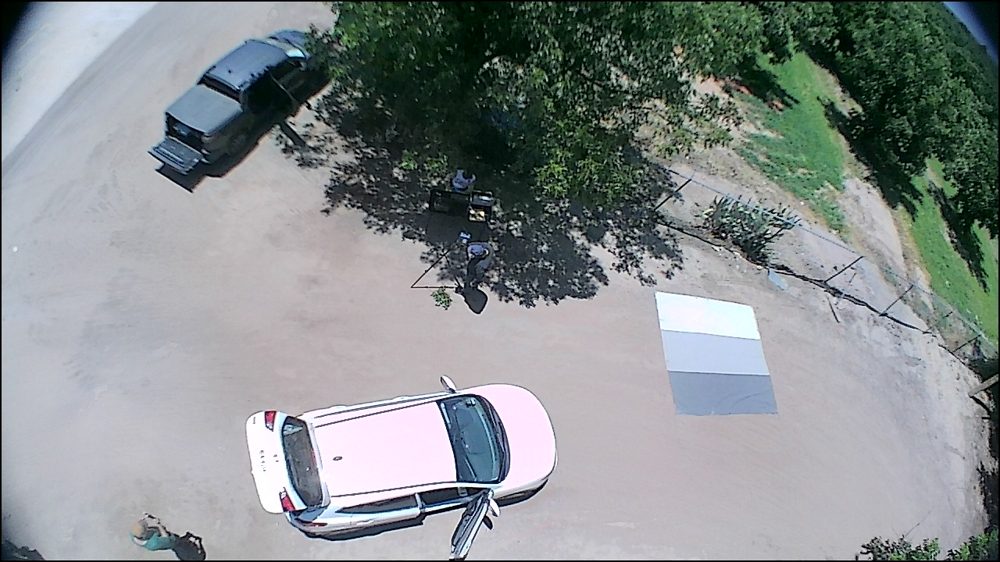
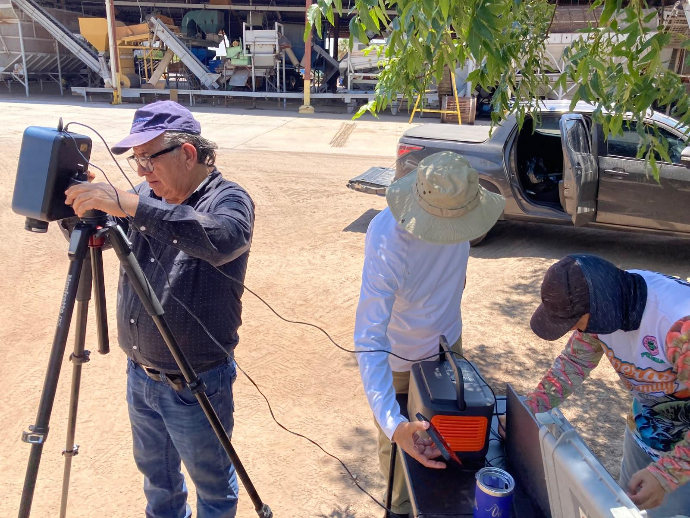

Field Work
We believe field activities are an important component of the RS & STEM Education project. Students and researchers participate in the collection of ground-based and UAV observations to complement satellite imagery and support the analysis and validation of remote-sensing products.
These activities include sensor deployment, calibration of measurements, UAV-based RGB image acquisition, ground observations, and training with remote-sensing instrumentation. Field campaigns are documented below.
July 9, 2026 Field Campaign






August 29, 2026 Field Campaign
A second field campaign was conducted on August 29, 2026 to obtain additional remote-sensing and ground observations of the study area. These measurements provide observations at a later stage of the growing season and support temporal comparisons with the July field campaign and available satellite imagery.